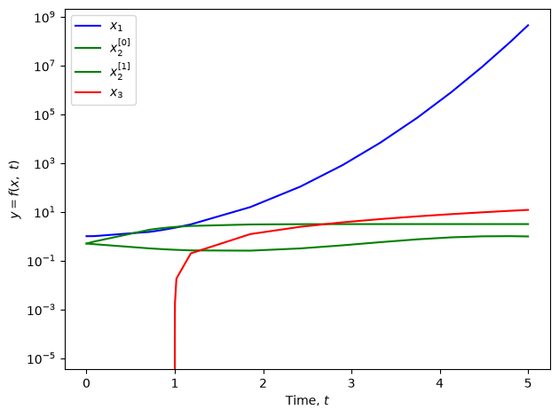
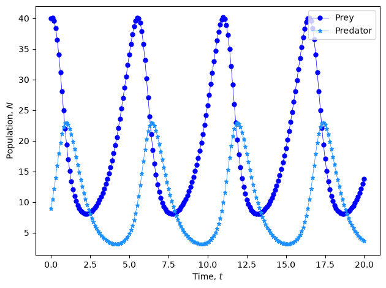

- Generated by
 1.18.0
1.18.0
|
NDXL v1.0.0
|
As explained in the Heterogeneous Dynamics section, agents in a network do not necessarily need to share dynamics, noise, or discrete callback functions. Whenever any of these are distinct for any two agents, the network is said to exhibit heterogeneous dynamics. Let us modify the basic example shown in the Adding Multiple Agents section to have the three vertices instead evolve according to
\[ \frac{dx_1}{dt} = Ax_1t, \]
\[ \frac{d\vec{x}_2}{dt} = B\sin{x_2^{[1]}} - Dx_2^{[2]}\cos{t}, \]
\[ \frac{dx_3}{dt} = \begin{cases} 0 & \text{if}~t < 1 \\ t & \text{otherwise} \end{cases} \]
To further emphasise heterogeneity, the second vertex has a two-element state vector, and the third evolves according to a piecewise function. As before, we simply define the different equations in separate dynamics functions.
The network callback for writing output to a file has identical structure to what has been shown in previous examples, so we will not repeat it here. In main(), the vertices can either be assigned the dynamics functions as we have been doing up to now...
...or we can set the dynamics after creation using ndxlSetVertexDynamics. We could take this a step further, and delay initial state and void* params assignment until after creation as well, using ndxlVertexState and ndxlSetVertexParams to update them, respectively. The only caveat is to ensure we pass 2 for the size of vertex 2's state vector, as the size cannot be changed later.
We simulate the network again using the Cash-Karp integrator, with a time stop at \(t=1\) to ensure the piecewise dynamics of v3 transition at the appropriate time.

The above example is one way to simulate heterogeneous dynamics, but not the only way. One could just as easily combine the state vectors of all the vertices into a single, contiguous vector, and define the heterogeneous dynamics in the dynamics function. The code is identical to Simulating Higher-Order Dynamics, and indeed one could consider a coupled system of ODEs as having distinct dynamics equations, because the right-hand side of the equation differs for each variable. As an example, consider a Lotka-Volterra type interaction between a predator \(N_{pred}\) and prey \(N_{prey}\) population, given by
\[ \frac{{\rm d}N_{prey}}{{\rm d}t} = \alpha N_{prey} - \beta N_{prey}N_{pred}, \]
\[ \frac{{\rm d}N_{pred}}{{\rm d}t} = \delta N_{prey}N_{pred} - \gamma N_{pred}. \]
Instead of defining separate vertices for the populations, we shall use a single vertex whose state vector contains both populations. In our dynamics function, we then simply write either equation to its corresponding index in the output vector.
Then in main() we set up the network as usual, this time having only one vertex. Output capturing remains semantically unchanged, though we will use a static stepping simulation method here instead to illustrate the parameter differences.
